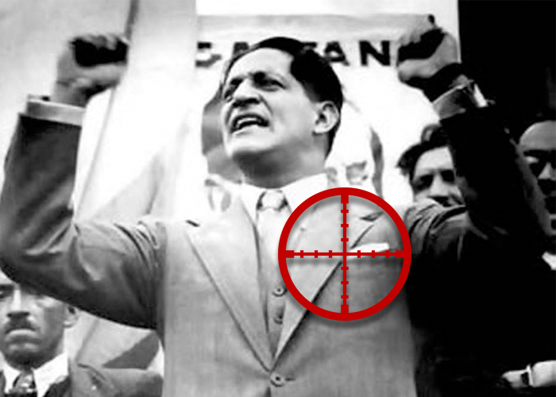
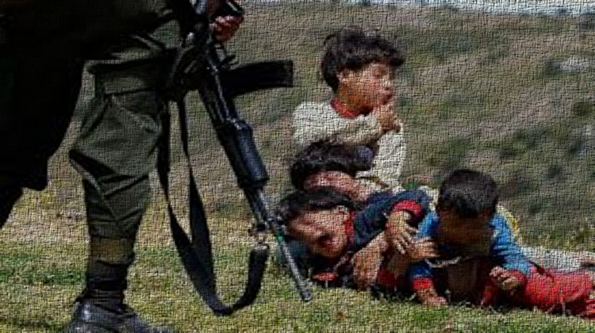
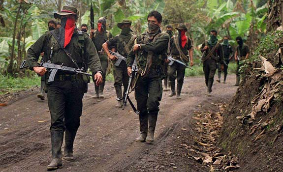
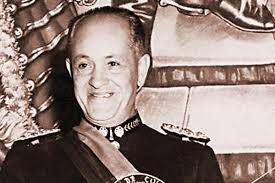
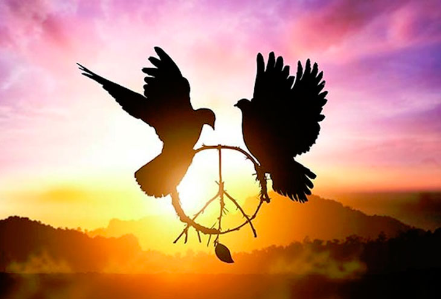

Si bien la llamada Violencia en Colombia comenzó mucho antes de 1948, la muerte de Jorge Eliécer Gaitán fue un detonante para que se generara el conflicto civil que por más de 10 años sumergió al país a un baño de sangre sin precedentes.
Liberales y conservadores empezaron una lucha frontal en el campo colombiano que no fue nunca declarada como guerra civil y que dejó cerca de 300 mil muertos y la migración interna de millones de personas a las grandes ciudades del país. Los historiadores han confirmado que esta etapa histórica del país estuvo también motivada por terratenientes que expulsaron a los campesinos de sus tierras ante la falta de una reforma agraria efectiva en la nación.
Esta etapa marcó también el inicio de las guerrillas en el país y puso de manifiesto las más tremendas formas de violación de los Derechos Humanos en el país. Los asesinatos de líderes también fueron el pan de todos los días en este tiempo y se presenta de forma dramática en los departamentos del Tolima, Antioquia, los Llanos Orientales y Magdalena Medio.
Con la toma del poder por parte del General Rojas Pinilla, se calma un poco la tensión imperante en el país, hasta 1957, cuando entre los líderes de los partidos se marca una tregua que terminaría con la ejecución del Frente Nacional que rotó el poder entre los dos partidos.
El sueño de una paz en Colombia, es algo que se lleva esperando por mucho tiempo, y lo mejor que podemos hacer es mejorar nuestra educación, aprender a diferenciar sobre lo bueno y lo malo y sobre todo empezar a tener más empatia y amor hacia nuestro pais, para que los cambios se empiecen a ver, y vivamos en un pais del cual se pueda afirmar con la cabeza en alto, que esta poblado por la paz entre los habitantes y la armonía en cada esquina, un pais que no tenga que recurrir a las armas por un simple conflicto o una opinión diferente, un pais libre y feliz.
Si quiere conocer las fuentes usadas en esta página, o conocer más al respecto por favor visite el siguiente link:
Radio Nacional De Colombia